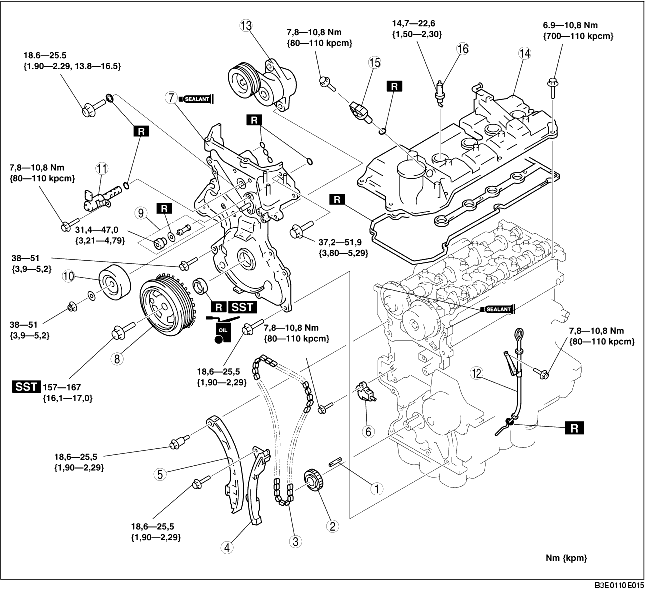

1. Sätt ihop i den ordning som anges i tabellen.

.
1. Passa in spåret på vevaxelns remhjul med inställningsmärket och sätt sedan kolv nr.1 i ÖDP.
2. Passa in kamaxlarna så att drevens märken skapar en linje med de märken som finns på den övre horisontala ytan på topplocket.
3. Montera kamkedjan.
4. Montera kamkedjestyrningen och kamkedjans spännarm.
5. Montera kedjejusteraren och demontera sedan wiren eller gemet som använts för fixering. (Demontera det monterade stoppet när den nya kedjespännaren monteras.)
6. Kontrollera att kamkedjan inte slackar och kontrollera därefter att alla drev är där de ska vara.
7. Kontrollera vetiltidernas funktion genom att rotera vevaxeln medsols två varv.
1. Stryk på silikontätning på den främre kåpan på motorn som bilden visar.
2. Dra åt monteringsbultarna till den främre motorkåpan i den ordning bilden visar.
|
Omfång |
Åtdragningsmoment |
|
9
|
7,8-10,8 Nm {80-110 kpcm, 69,1-95,5 inlbf}
|
|
1-6, 8, 10, 12-15, 17, 18
|
18,6-25,5 Nm {1,90-2,29 kpm, 13,8-16,5 ftlbf}
|
|
7, 11, 16
|
37,2-51,9 Nm {3,80-5,29 kpm, 27,5-38,2 ftlbf}
|
3. Montera oljetätningen med specialverktyget.
4. Montera oljefiltret på pluggen och sätt i det i den främre kåpan såsom bilden visar.
1. Säkra medbingarskivan (ATX) eller svänghjulet (MTX) från att rotera med specialverktyget.
2. Dra åt monteringsbulten i vevaxelns remskiva.
1. Stryk på silikontätning enligt bilden.
2. Dra åt monteringsbultarna till ventilkåpan i den ordning bilden visar.